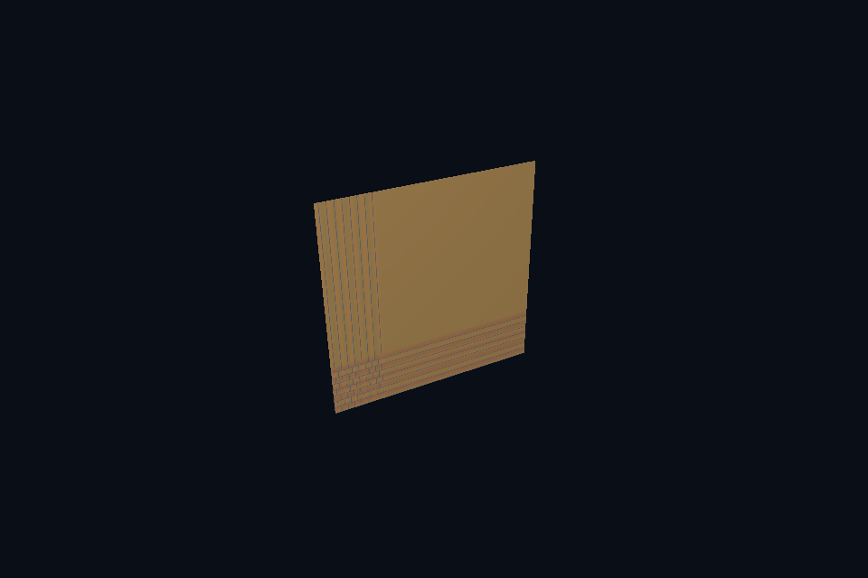

dx52_sampler_addressing · 纹理寻址
54 课目录
目的与实际执行
当前图形 root signature 使用 static sampler，寻址策略是创建接口的一部分。改变它通常涉及相应 root signature/PSO 组合；若需要频繁变化，可设计独立 sampler heap/table，而不是随意改纹理字节。
本程序有独立实验选择与验证路径，公共实现集中在 advanced_labs.cpp。设备/API 检查、数值 compute 与图形渲染采用不同证据；不是每个程序都会弹出窗口。
构建和运行
cmake --preset dx12
cmake --build --preset dx12-debug --target dx52_sampler_addressing --parallel 4
.\DirectX12\build\bin\Debug\dx52_sampler_addressing.exe
深入学习：数据、接口与执行
本课的真实源码切片
来自 DirectX12/common/dx12_course.hpp，第 354—397 行；这是现有实现的局部摘录，末尾可能处于函数中间，不是可单独编译的完整程序。
range.NumDescriptors = 1;
range.BaseShaderRegister = 0;
range.OffsetInDescriptorsFromTableStart = D3D12_DESCRIPTOR_RANGE_OFFSET_APPEND;
params[2].ParameterType = D3D12_ROOT_PARAMETER_TYPE_DESCRIPTOR_TABLE;
params[2].DescriptorTable = {1, &range};
params[2].ShaderVisibility = D3D12_SHADER_VISIBILITY_PIXEL;
D3D12_STATIC_SAMPLER_DESC sampler{};
sampler.Filter = D3D12_FILTER_MIN_MAG_MIP_LINEAR;
sampler.AddressU = sampler.AddressV = sampler.AddressW =
clampSampler ? D3D12_TEXTURE_ADDRESS_MODE_CLAMP : D3D12_TEXTURE_ADDRESS_MODE_WRAP;
sampler.MaxLOD = D3D12_FLOAT32_MAX;
sampler.ComparisonFunc = D3D12_COMPARISON_FUNC_ALWAYS;
sampler.ShaderVisibility = D3D12_SHADER_VISIBILITY_PIXEL;
D3D12_ROOT_SIGNATURE_DESC root{};
root.NumParameters = 3;
root.pParameters = params;
root.NumStaticSamplers = 1;
root.pStaticSamplers = &sampler;
root.Flags = D3D12_ROOT_SIGNATURE_FLAG_ALLOW_INPUT_ASSEMBLER_INPUT_LAYOUT;
signature = rootSignature(c, root);
auto vs = compileHlsl(mode == 3 ? "TriangleMain" : "VertexMain", "vs_5_1"),
ps = compileHlsl("PixelMain", "ps_5_1");
D3D12_INPUT_ELEMENT_DESC elements[] = {{"POSITION",
0,
DXGI_FORMAT_R32G32B32_FLOAT,
0,
0,
D3D12_INPUT_CLASSIFICATION_PER_VERTEX_DATA,
0},
{"NORMAL",
0,
DXGI_FORMAT_R32G32B32_FLOAT,
0,
12,
D3D12_INPUT_CLASSIFICATION_PER_VERTEX_DATA,
0},
{"TEXCOORD",
0,
DXGI_FORMAT_R32G32_FLOAT,
0,
24,
D3D12_INPUT_CLASSIFICATION_PER_VERTEX_DATA,
0}};
D3D12_GRAPHICS_PIPELINE_STATE_DESC pso{};
同主题跨 API 导航
先预测，再验证
在 UV=0..4 的测试几何上比较 clamp 与 repeat，解释边缘拉伸来自哪里。
参考推导：clamp 将越界坐标限制到边缘 texel，repeat 周期折回。两者都读取同一内容，区别来自寻址规则而非模型解析。
验证与边界
运行 --smoke 执行有限自动检查。数值实验读取实际 GPU 结果，图形实验检查非空图像并可查看读回。交互重建与性能还需额外证据；窗口 renderer 当前保留串行等待，双槽计算实验不会被描述为完整多帧呈现引擎。
实际画面
